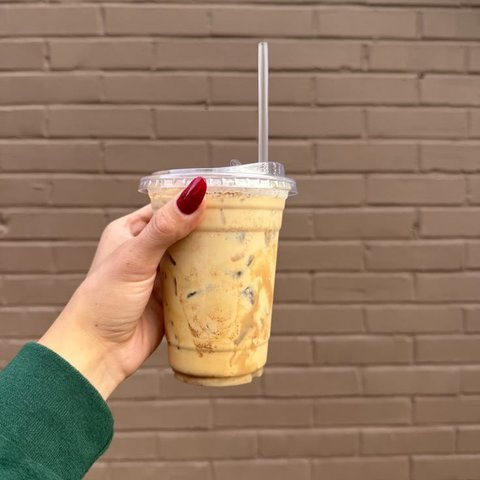

Arts · Fenway
Matcha, the Fens and Free Thursday at the Gardner
~$8 · 3.5 hr4 stops
You've lived here. Have you explored it? Breadcrumb turns Boston into small trails: a few stops to walk, ride or bike between, with little tasks along the way.
Find your next adventure through trails created by people who know the city. Explore what's trending, what's nearby, or what your friends are up to.
Filter by vibe, neighborhood, budget, or time. Whether it's a spontaneous late-night run or a full afternoon of exploring, there's a trail for it.
Follow your trail stop by stop. Check transit, explore new places, snap photos, and keep track of every crumb along the way.
Rate your experience, share your photos, or remix a trail into something new. Your next adventure might become someone else's favorite.

Manage your trail all in the app. Start a trail and view the route on the map, every stop in order, and the crumbs waiting along the way.
Pick a trail and head out.